| Brand | Cycle | Year | Products | Status | Download |
|---|
How this was built: the CRISP-DM cycle
The project follows the six phases of CRISP-DM (Cross-Industry Standard Process for Data Mining). It is iterative, not linear: evaluation kept looping back into the data and the model (the price-less rows, the C1 relabel, the robustness check below).
- 1. Business understanding. Framed for an RGM / pricing manager: how do rival brands run assortment, price and promotion across cycles?
- 2. Data understanding. 112 public catalogs (5 brands, 2025–26) as images/PDFs; map coverage, gaps and quirks (non-chronological cycles, price-less items).
- 3. Data preparation. Vision/LLM extraction turns pages into rows; clean (price R$3–2,000) and engineer five behavioural features per unique product.
- 4. Modeling. k-means on the standardized features; k chosen by silhouette (= 4); PCA for the 2-D map.
- 5. Evaluation. Silhouette, a feature-robustness check (ARI), and a sanity read of each archetype against the business questions.
- 6. Deployment. This live explorer: data table, ML tab, animations, filters and downloadable CSVs.
Portfolio clustering: four product archetypes
The extraction yields 116,234 product records across the 112 catalogs; the clustering works from the 114,323 rows that carry a recorded regular price (R$3–2,000) — shade variants and items shown only under a group price have no individual price and are set aside. Across five brands (O Boticário, Natura, Avon, Eudora, Jequiti), these priced rows collapse into 25,180 unique products (brand + normalized name). Each product is described by five features aggregated over every catalog appearance (median price, promo exposure, discount depth, catalog persistence, and price volatility), then standardized and clustered with scikit-learn KMeans. Silhouette analysis picks k = 4, and the four clusters turn out to be four very different jobs a product can do in a catalog.
How the clustering is computed
The pipeline takes the 114,323 priced product rows (of the 116,234 extracted records, over 110 catalog-cycles and five brands) and reduces them to 25,180 unique products, describes each with five behavioural features, standardizes them, and partitions them with k-means. Every step is reproducible from analysis/cluster_portfolio.py.
1 · Unit of analysis & working hypotheses
A product is keyed by (brand, normalized_name), where the name is lower-cased and whitespace-collapsed. Every appearance of that key across all catalogs is folded into a single feature vector. The analysis rests on four hypotheses:
- H1 (stable role). A product plays the same commercial role across the window, so aggregating its appearances into one vector is meaningful.
- H2 (sufficient features). Price level, promo exposure, discount depth, persistence and price stability capture the behaviour that separates roles.
- H3 (convex, Euclidean-separable groups). Roles form compact, roughly round blobs in standardized space, the structure k-means (Euclidean distance) can recover.
- H4 (representative calendar). The catalogs collected approximate each brand’s publishing calendar; persistence is relative to the catalogs available, not the full year.
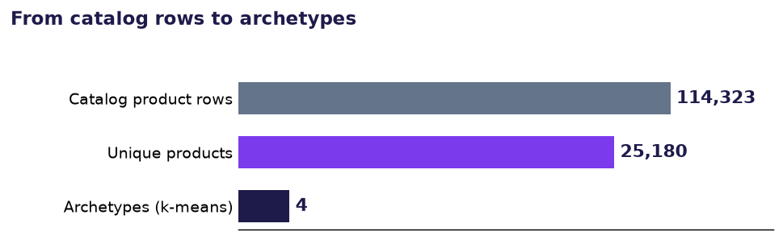
2 · Feature vector (per unique product p)
Let A(p) be the appearances of product p; for each appearance i, ri is the regular price, di the discount % when on promotion, and πi ∈ {0,1} the promo flag.
| Feature | Formula | What it captures |
|---|---|---|
| log_price | ln( mediani ri ) | Price tier; log tames the right-hand tail |
| promo_rate | (1/|A|) · Σi πi | Share of appearances on promotion (0–1) |
| med_discount | median{i : π=1} di (0 if never) | Markdown depth when promoted |
| log_appearances | ln |A(p)| | Catalog persistence |
| price_cv | ( stdi ri / mediani ri ), clip [0,1] | Price volatility across appearances |
Guards: rows with regular_price ∉ [R$3, R$2000] or a missing name are dropped before aggregation.
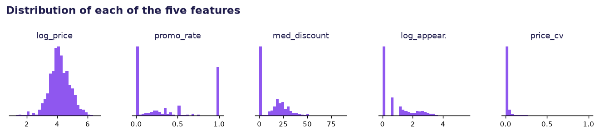
3 · Standardization (z-score)
Each feature j is centred and scaled over all products (StandardScaler) so no single feature dominates the distance:
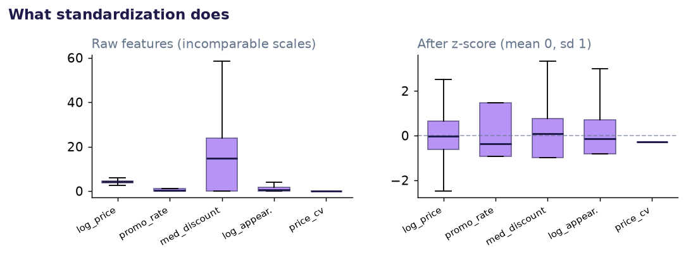
4 · k-means partitioning
k-means (Lloyd’s algorithm, k-means++ init, 25 restarts, random_state=42) finds the centroids μc that minimize within-cluster squared Euclidean distance:
Clusters are relabelled by ascending median price, so C0 → C3 run cheapest → priciest.
Lloyd’s algorithm converging on the real 5-D data (shown in the 2-D PCA projection): big dots are centroids, small dots are products coloured by their nearest centroid. Each step reassigns points, then moves each centroid to the mean of its members, until nothing changes (14 steps).
5 · Choosing k: silhouette and inertia
k is not learned by k-means; we fix it in advance. To pick it we fit the model for k = 3…7 and weigh two diagnostics against each other.
Inertia (within-cluster sum of squares) is exactly the quantity k-means minimizes: the total squared distance from every point to its own centroid.
Adding clusters can only lower it (one centroid per point drives it to 0), so it can never be maximized directly. Instead you look for the elbow: the k past which each extra cluster buys only a small further drop. The elbow is informative but subjective, with no single value to optimize.
Silhouette fixes that by scoring how well each point fits its own cluster versus the nearest alternative. For a point i, let a(i) be its mean distance to the other points in its own cluster and b(i) its mean distance to the points of the nearest other cluster:
- s ≈ +1: the point sits snugly inside its cluster, far from any other (well clustered).
- s ≈ 0: it lies on the boundary between two clusters (ambiguous).
- s < 0: it is closer to a neighbouring cluster than its own (probably mis-assigned).
We average s(i) over a 4,000-point sample at each k. Unlike inertia, silhouette has a genuine maximum, so it is the decider:
| k | 3 | 4 | 5 | 6 | 7 |
|---|---|---|---|---|---|
| silhouette | 0.416 | 0.431 | 0.393 | 0.317 | 0.323 |
Silhouette peaks at k = 4 (0.431) while inertia just keeps sliding, so we take k = 4. The chart plots both: silhouette (violet, pick the top) against the inertia elbow (grey).
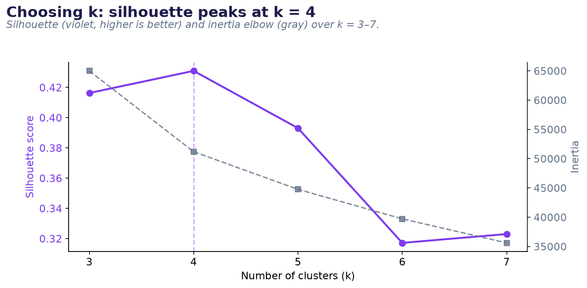
6 · PCA for the 2-D map only
Principal components project the 5-D space onto the scatter plots; the clusters themselves are fit in the full 5-D space. The first two components explain 34% + 28% = 62% of variance, with an interpretable structure:
- PC1, the promotion axis (loadings med_discount 0.71, promo_rate 0.64): separates never-promoted from promo-born.
- PC2, the persistence axis (log_appearances 0.71, price_cv 0.60): separates one-cycle items from the recurring, repriced backbone.
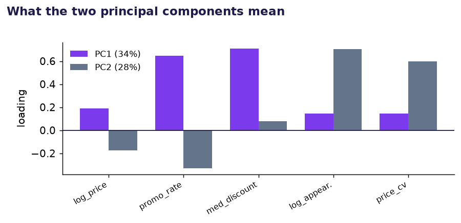
7 · Robustness check: do the archetypes survive different features?
I re-ran k-means on alternative feature sets and measured how much the assignments move with the Adjusted Rand Index (ARI: 1 means identical to the baseline, 0 means unrelated).
| Feature set | ARI vs baseline | What happens |
|---|---|---|
| Baseline (the five features) | 1.00 | reference |
| + brand or + category | 0.01–0.02 | clusters collapse onto brand/category (≈100% pure); the behaviour is lost, so these are deliberately excluded |
| + kit/gift flag | 0.83 | essentially the same archetypes |
| drop the two price features | 0.84 | same archetypes; promotion + discount + persistence carry them |
| drop promotion & discount | 0.30 | archetypes break; promotion/discount is the defining axis |
So the archetypes are stable under behavioural tweaks and are driven by the promotion/discount axis. Brand and category are left out on purpose: adding them just makes k-means re-describe brand and category (in the baseline, no cluster is more than ~44% one category or brand, so the groups cut across them). Reproducible from analysis/feature_experiments.py.
8 · General considerations & limitations
- Labels describe the typical member, not a rule. k-means assigns by the whole 5-feature vector, and the promotion/discount axis dominates, so a never-discounted item can land in the full-price cluster (C1) even if it recurs a few times (~a third of C1 appears 2–9×).
- Name-based identity. Renamed or re-bundled items read as new products, inflating the low-recurrence clusters (C1, C3).
- Model assumptions. k-means presumes roughly isotropic, similar-sized clusters; the tiny managed set (C0, 2%) sits near the model’s resolution limit.
- Extraction noise. promo_rate and med_discount inherit page-level vision-extraction error.
- Volatility clipping. price_cv is capped at 1 so a few mis-read prices can’t dominate the distance metric.
- Relative persistence. Appearances count against the catalogs collected, not each brand’s full annual calendar; coverage differs by brand and year.
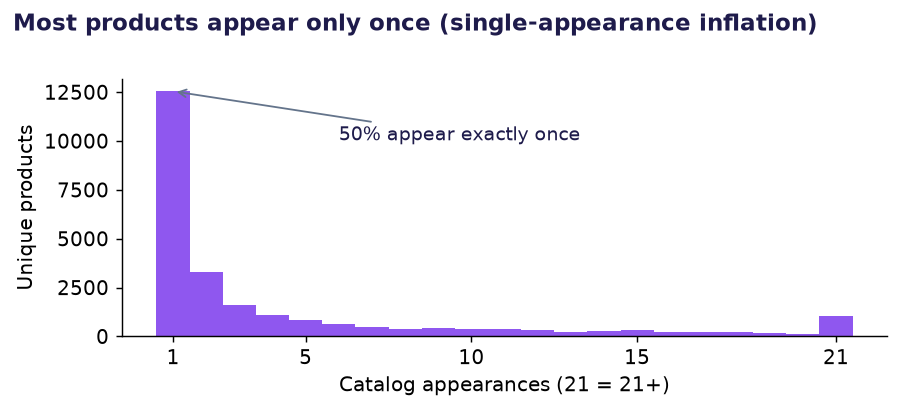
C1 · 40.0% of products
Full-price newcomers
Sit at full price and are effectively never marked down (median 0% off). Most appear just once or twice, then rotate out. The novelty engine of makeup shades and seasonal variety: Make B., Una, Quem Disse, Berenice?
R$60 median · 0% discount · 66% appear once
C3 · 31.5% of products
Born on promotion
Also mostly single-appearance, but 94% arrive already discounted. The priciest archetype (R$70 median) and where gift kits (“Presente…”) concentrate: offers built as offers.
R$70 median · 1 appearance · 94% promo · −22%
C2 · 26.5% of products
The evergreen backbone
The recurring assortment: median 11 catalog appearances with rock-stable prices (volatility 1.9%) and a promotion roughly every fourth appearance. This is the shelf the rotation revolves around.
R$60 median · 11 appearances · 29% promo · −21%
C0 · 2.0% of products
The managed few
The only archetype whose prices actually move (volatility 26%): persistent staples that are repriced and heavily promoted. Active price management is rare, and it is spread across all five brands, not any single house.
R$57 median · 5 appearances · 41% promo · −21%
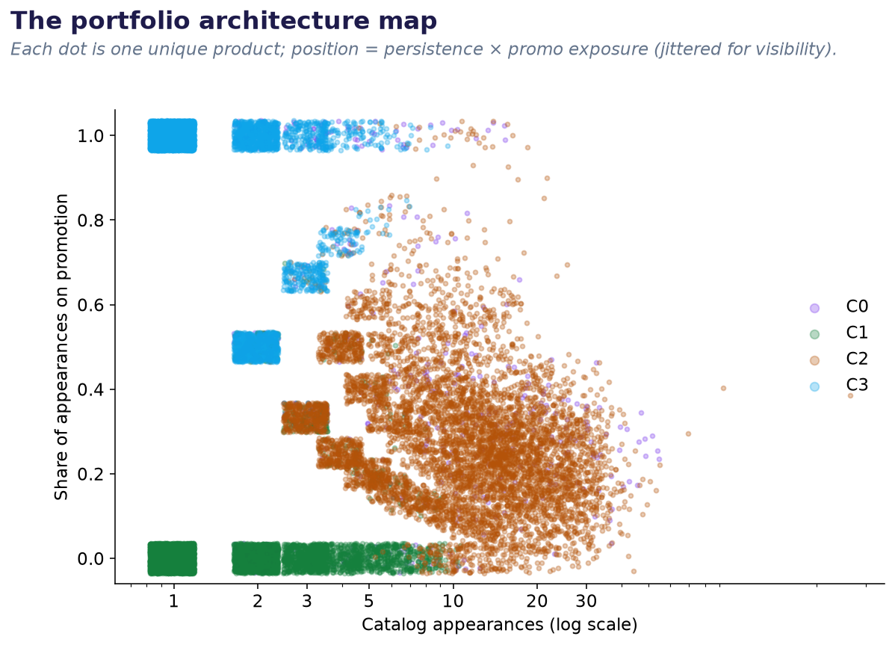
The whole architecture in one picture: two dense single-appearance columns on the left: full-price novelty (green, bottom) and promo-born kits (blue, top), alongside the persistent backbone (amber) and the actively managed set (violet) stretching to the right.
Watch the architecture fill in, cycle by cycle
Press play: step 1 is the first extracted cycle and each step adds the next publishing period (year · cycle). Products drift right as they accumulate appearances, so the recurring backbone (amber) grows out of the single-appearance columns on the left. (All 25,180 unique products; colours are the final clusters: C0 violet, C1 green, C2 amber, C3 blue. Click any dot for its product.)
Loading…
What the clusters reveal
- The catalog is a showcase, not a shelf. Half of all unique products appear in exactly one catalog, and the two low-recurrence archetypes (C1 + C3) hold ~72% of the portfolio; only about a quarter is recurring assortment (C2 + C0).
- Promotion is a birth trait, not a lifecycle event. A product tends to either stay at full price (C1) or debut already discounted (C3); sustained markdowns recur mainly in the backbone (C2).
- The house discount is ~20%. Wherever promotion happens, the median discount lands at 21–24%, a standardized markdown, not product-level price tuning.
- True price management is the exception. Just 2% of products combine repricing with heavy promotion: a tiny actively-managed core.
- All five brands run the same playbook. Every archetype is a mix of O Boticário, Natura, Avon, Eudora and Jequiti; no single house owns a strategy, so the cluster structure is driven by behaviour, not brand (Avon leans a little heavier on promo-born kits, O Boticário on one-cycle novelty).
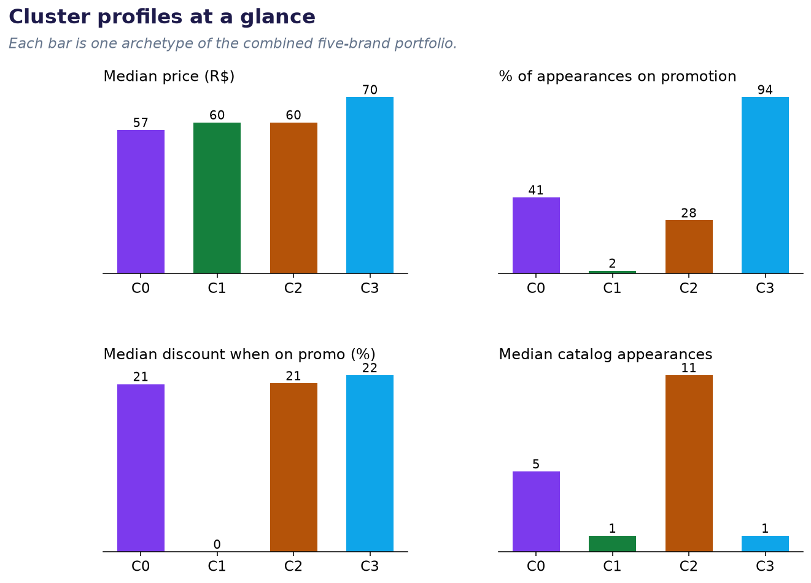
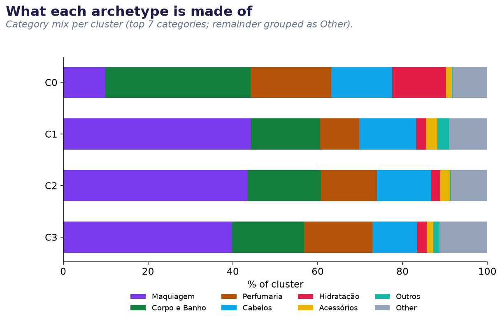
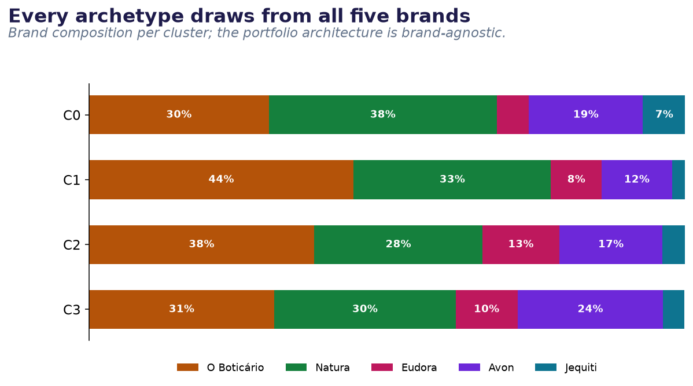
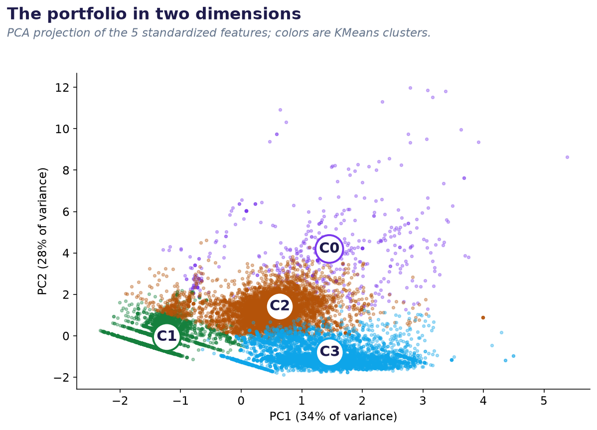
Pricing & promotion
Discount depth, price bands and how often the mix is promoted. Filter by brand, category or archetype, and press play to watch the distributions build up cycle by cycle.
Loading…
Discount depth per SKU
Products by price band
Promo frequency of the mix
Method & limitations
Features per unique product: log median regular price, share of appearances on promotion, median discount when promoted, log catalog appearances, and price coefficient of variation. Standardized, clustered with KMeans (k = 3–7 tested; silhouette peaks at k = 4, score 0.43). PCA is used for the 2-D projection only.
- Products are matched by normalized name within brand; renamed or re-bundled items count as separate products, which inflates the single-appearance clusters somewhat.
- Catalog coverage differs by brand and year (110 processed catalogs, 2025–26); persistence is measured against the catalogs available, not the brands’ full calendars.
- Promotional flags come from vision-extracted catalog pages; page-level extraction errors propagate into promo rates.